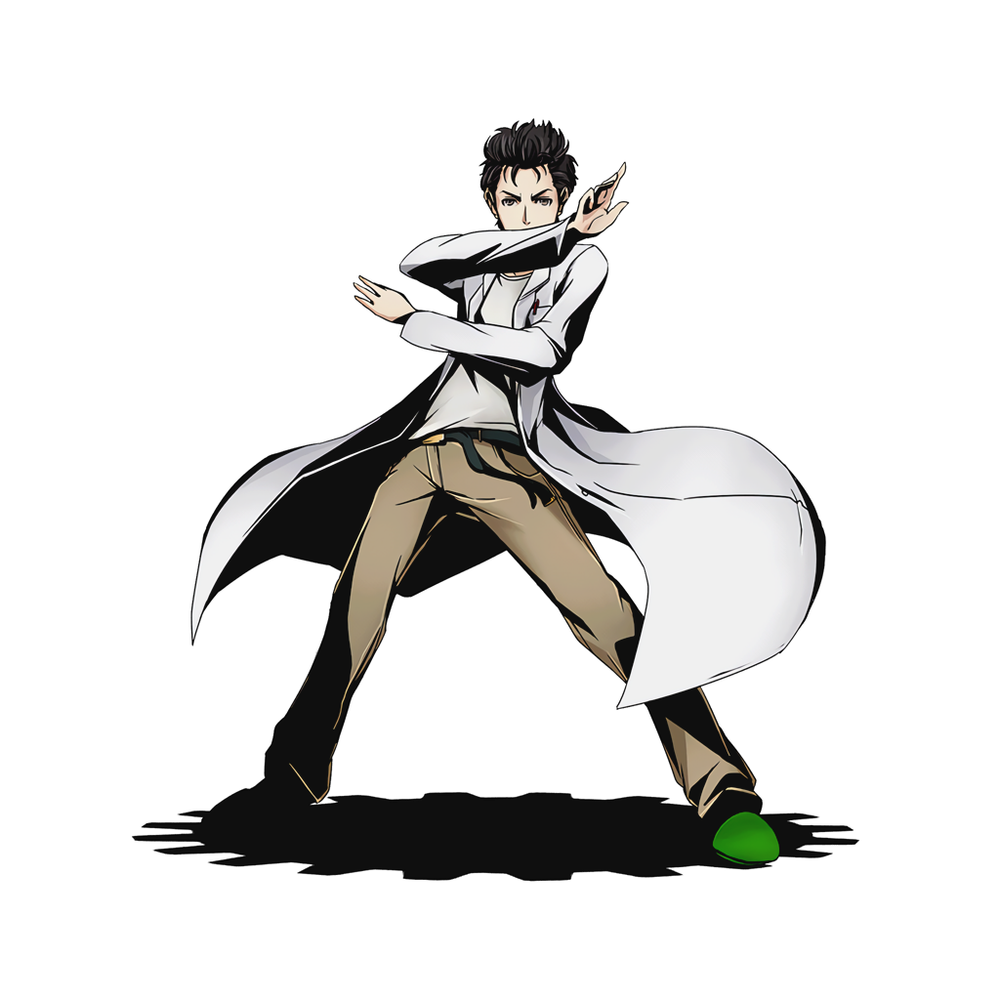

About Me
Soy un estudiante de ingerieria de sistemas que por rasones de la vida desicio postular para ingreso a la scesi, En todo mi tiempo de desarrollo fui viendo varias herramientas como frameworks que fueron de ayuda para la realización de algunos trabajos y proyectos personales
En un momento mi interes por aprender mas crecio por otras ramas por lo caul el conocimiento adquirido por la universidad no me satisfacia en completo por lo que momento espero encontrar otra perspectiva
